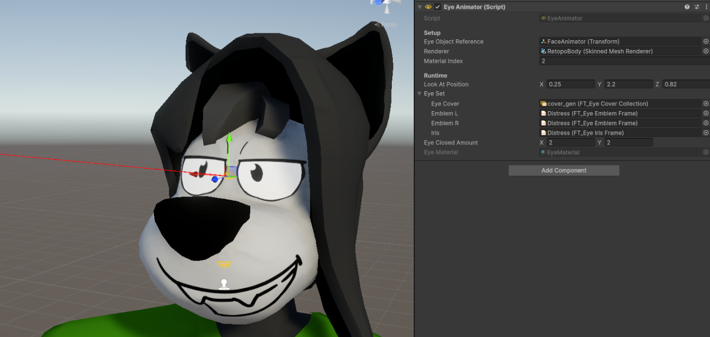

Eye Animator Component
The Eye Animator handles the mapping of incoming values, such as look-at positions and appearance, directly to the shader.

Setup
To bind the EyeAnimator with a character, follow these steps:
- EyeObjectReference: Set this to a GameObject that will be used as a reference for eye direction calculations. It’s recommended to parent it to the head bone, positioning it between both eyes, with its Z-positive direction (blue arrow) aligned with the face direction.
- Renderer: Assign the renderer component that has the eye material. This is usually the head model itself, but may be a separate object depending on the character.
- Material Index: Adjust this to point to the correct index of the eye material in the renderer's materials list.
- Check the gray field labeled Eye Material at the bottom of the EyeAnimator component. If the correct material is displayed, the setup is complete.
Runtime
This section exposes parameters of the shader directly.
It displays the current world coordinates for LookAtPosition, as well as the active EyeSet and EyeCover indexes.
Note: For performance reasons, some changes may not immediately reflect in the shader when in edit mode.
Usage
For authoring cutscenes/animations, see Eye Timeline Track. For simple ambient animation see the State Machine Driver.
API
For script usage see the Scripting API part of the documentation.